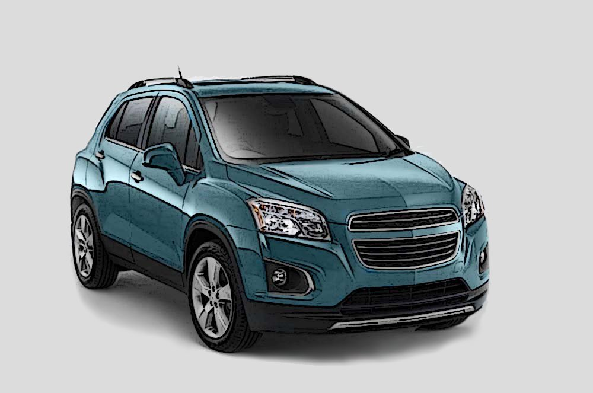
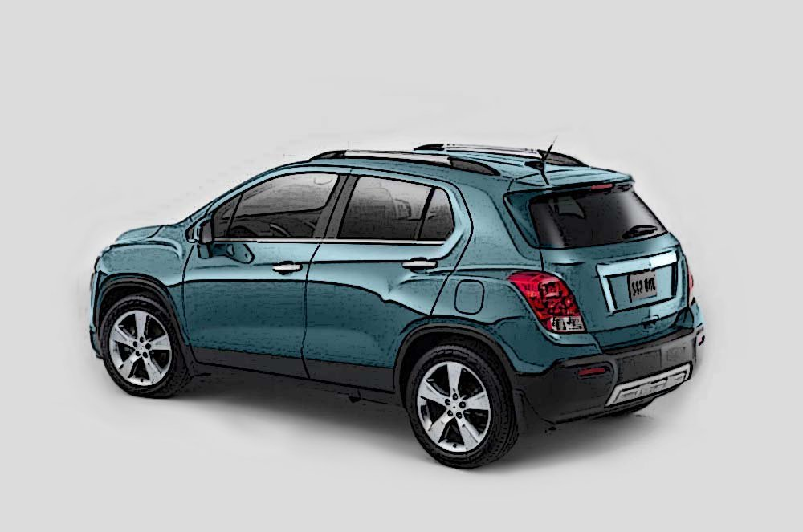

Geri

Yükleniyor...


- Kısa Far
- Kısa Far 2
- Uzun Far
- Uzun Far 2
- HID Far
- Ön Sis
- Ön Sis 2
- Gündüz Farı
- Gündüz Farı 2
- Viraj Farı
- Viraj Farı 2
- Ön Park
- Ön Park 2
- Ön Sinyal
- Ön Sinyal 2
- İç Aydınlatma
- İç Aydınlatma 2
- İç Aydınlatma 3
- Gösterge Paneli
- Gösterge Paneli 2
- Yan Sinyal
- Yan Sinyal 2
- Yüksek Fren
- Yüksek Fren 2
- Plaka Aydınlatma
- Plaka Aydınlatma 2
- Arka Sinyal
- Arka Sinyal 2
- Fren/Arka Lamba
- Fren/Arka Lamba 2
- Arka Park
- Arka Park 2
- Arka Sis
- Arka Sis 2
- Geri Vites
- Geri Vites 2
×